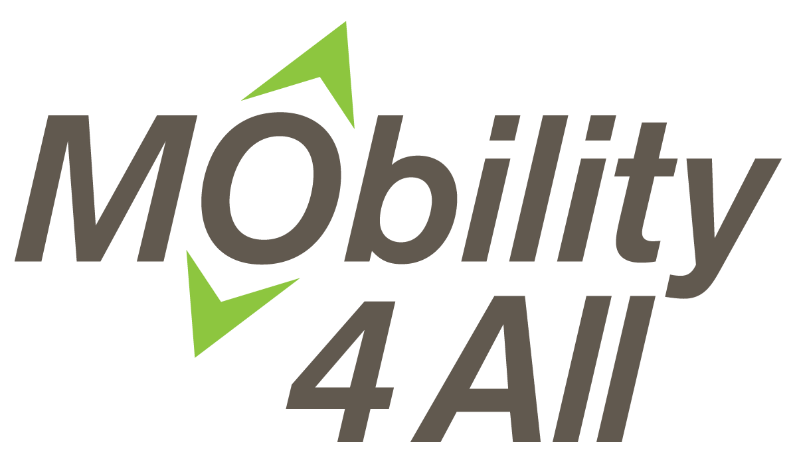

<div layout="column" layout-align="space-around center" class="welcome">
  
  <div layout="column" layout-align="center center">
    <md-button class="md-raised md-primary" ng-click="hc.go('rider-login')">Log In As Rider/Caregiver</md-button>
    <md-button class="md-raised md-primary" ng-click="hc.go('driver-login')">Log In As Driver</md-button>
    <span id="or">or</span>
    <md-button class="md-raised md-primary" ng-click="hc.go('register')">Sign Up</md-button>
  </div>


        <!-- testing if we can get map and autcomplate input to show -->
        <form id="form" role="form">

            <div class="form-group move-down">
                <label for="Autocomplete">Generic Autocomplete</label>
                <input type="text" id="Autocomplete" class="form-control" ng-autocomplete ng-model="result1" />
            </div>
            <div>result: {{result1}}</div>

        </form>


</div>

<ng-map center="[40.74, -74.18]"></ng-map>
